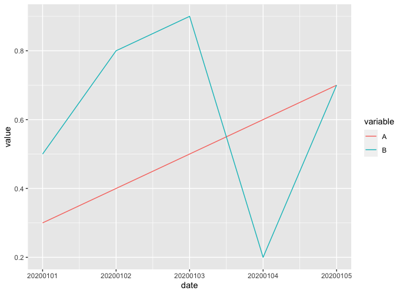
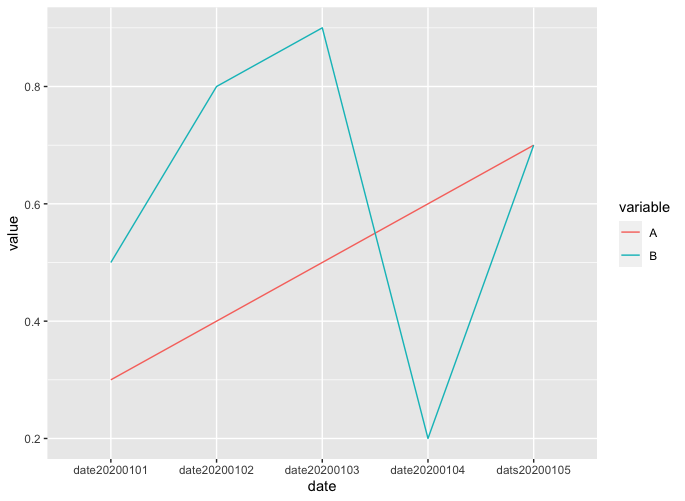

在以前有聽聞說R語言很適合用來畫圖，方便人們來觀察資料的特性，這篇粗淺的紀錄一下我用過的一些作圖function。
安裝R和RStudio
可以在CMU的網站上下載R的安裝檔，並在RStudio的官網上下載RStudio，在完成這兩件事情以後，應該就能順利的在電腦上使用RStudio撰寫R的script了。
資料的讀寫
在準備好環境以後，接下來就是去將資料讀取進來，而在讀取的部分只需要打上read.csv()就能輕鬆的把csv檔讀進來了。
data = read.csv("[path to your csv file]")
summary(data)
View(data)
而且R還有提供一些貼心的function，像是summary()：可以幫你簡單的總結一下這分檔案的基本資料、View()：可以在RStudio裡面以表格的方式打開這個csv檔，方便人們閱覽。
折線圖
若今天的資料形式適合畫折線圖來觀察趨勢的話，可以使用ggplot()來幫助你畫折線圖。
橫軸是其中一個欄位
假設今天的資料test.csv長得像底下這樣。
| date | A | B |
|---|---|---|
| 20200101 | 0.3 | 0.5 |
| 20200102 | 0.4 | 0.8 |
| 20200103 | 0.5 | 0.9 |
| 20200104 | 0.6 | 0.2 |
| 20200105 | 0.7 | 0.7 |
單一變數作圖
如果我們希望以日期為橫軸、A的值作為縱軸畫出來的話，直接打上底下的程式碼就行。
library(ggplot2)
data = read.csv("test.csv")
ggplot(data) + geom_line(aes(x=date, y=A))

上面的程式碼中，首先先引入ggplot2這個畫圖的library，再來ggplot(data)可以想成是我現在想要以data這個dataframe作圖，而我想要的形式是線，亦即geom_line()，而aes()宣告了這條線的x、y軸的資料要從哪一個column中做選取。
多變數作圖
倘若想要以日期作為橫軸、A和B的值作為縱軸畫在同一張圖片上，並以不同的顏色區分開來，可以參考底下的程式碼。
library(ggplot2)
library(reshape2)
data = read.csv("test.csv")
melt_data = melt(data, id.vars="date")
ggplot(melt_data) + geom_line(aes(x=date, y=value, group=variable, color=variable))

在這邊我們多引入了一個叫reshape2的library幫我們把dataframe melt一下，melt()這個function所做的事情是把dataframe的資料以我們所設定好的column打散。
以melt(data, id.vars="date")這個例子來說，我們會固定date這個column，將A、B這兩個column的資料打散，想法上是去看說date這個column有個值是20200101，其對應到的column A的值是0.3，對應到B的值是0.5，所以會分別產生(20200101, A, 0.3)和(20200101, B, 0.5)這兩筆資料，並持續進行下去直到date的所有值都看過，也因此經過melt()以後，我們可以得到以下的dataframe。
| date | variable | value |
|---|---|---|
| 20200101 | A | 0.3 |
| 20200102 | A | 0.4 |
| 20200103 | A | 0.5 |
| 20200104 | A | 0.6 |
| 20200105 | A | 0.7 |
| 20200101 | B | 0.5 |
| 20200102 | B | 0.8 |
| 20200103 | B | 0.9 |
| 20200104 | B | 0.2 |
| 20200105 | B | 0.7 |
值得一提的是，melt()可以指定新的欄位名稱，使你在作圖時的橫軸、縱軸能用自定義的名稱。舉例來說，我想要將variable換成type、value換成score的話，可以參考底下程式碼。
melt_data = melt(data, id.vars="date", variable.name="type", value.name="score")
有了這樣子的dataframe以後，就可以填入至aes()裡面，變成aes(x=date, y=value, group=variable, color=variable)，告訴它我們想要以date為橫軸value為縱軸，其中每個值有它所屬的group，以variable為標示，而我希望每個group以不同顏色標示，如此便能畫出我們所想要的圖了。
橫軸”不”是其中一個欄位
如果說今天手上的資料長成底下這樣。
| type | date20200101 | date20200102 | date20200103 | date20200104 | date20200105 |
|---|---|---|---|---|---|
| A | 0.3 | 0.4 | 0.5 | 0.6 | 0.7 |
| B | 0.5 | 0.8 | 0.9 | 0.2 | 0.7 |
可以看到現在每一個日期變成了一個column，沒有辦法輕易的指定橫軸、縱軸就將圖畫出來，不過我們可以稍微調整一下資料，使之變成像”橫軸是其中一個欄位“那樣好指定的長相，整個程式碼長得像底下這樣。
t_data = setNames(data.frame(t(data[,2:ncol(data)])), data[,1])
t_data["date"] = rownames(t_data)
melt_t_data = melt(t_data, id.vars="date")
ggplot(melt_t_data) + geom_line(aes(x=date, y=value, group=variable, color=variable))
首先，我們得要將資料透過t()轉置一下，把日期變成row，於此同時把column name設成A、B，也就是程式碼中的第一行，其中data[,2ncol(data)]的意思是選取data裡面的第二個column至最後一個column(R是1 base的語言)，也就是從date20200101選到date20200105，同理，data[,1]就是選取type這個column。
在經過第一行的轉換以後，原先的dataframe會變成底下的樣子。
| A | B | |
|---|---|---|
| date20200101 | 0.3 | 0.5 |
| date20200102 | 0.4 | 0.8 |
| date20200103 | 0.5 | 0.9 |
| date20200104 | 0.6 | 0.2 |
| date20200105 | 0.7 | 0.7 |
雖然變得比較像可以直接指定了，但目前還沒有辦法直接把所有的日期都選取起來，也就是日期還不是一個column，不過我們可以透過t_data["date"] = rownames(t_data)來新增一個column date，其中每個row都是日期。
| A | B | date | |
|---|---|---|---|
| date20200101 | 0.3 | 0.5 | date20200101 |
| date20200102 | 0.4 | 0.8 | date20200102 |
| date20200103 | 0.5 | 0.9 | date20200103 |
| date20200104 | 0.6 | 0.2 | date20200104 |
| Date20200105 | 0.7 | 0.7 | date20200105 |
至此我們成功讓我們的資料長得像”橫軸是其中一個欄位“中的資料那樣，接著一樣透過melt()和ggplot()便能將圖畫出來了。

文氏圖
文氏圖很適合用來觀察集合的關係，而R也有套件能夠幫助你很容易地畫出簡單的文氏圖。
安裝套件
在R裡面可以幫忙畫文氏圖的套件叫VennDiagram，可以使用底下的指令安裝並引入。
install.packages("VennDiagram")
library(VennDiagram)
使用VennDiagram畫出文氏圖
假如我們今天想要觀察兩個集合A、B的關係，我們也已經知道兩者的大小和交集如下。
| A | B | Intersection |
|---|---|---|
| 100 | 40 | 15 |
使用的方式很簡單，只要把數字填進去就能夠將圖畫出來了。
grid.newpage()
plot = draw.pairwise.venn(area1=100, area2=40, cross.area=15, category=c("A", "B"), fill=c("blue", "red"))

加上百分比和修改字體大小
如果想要在圖裡面加上百分比的話，只需要多加print.mode=c("raw", "percent")就行。
至於字體的大小，可以透過cex調整數字字體大小、cat.cex調整類別的字體大小。
grid.newpage()
plot = draw.pairwise.venn(area1=100, area2=40, cross.area=15, category=c("A", "B"), fill=c("blue", "red"), print.mode=c("raw", "percent"), cex=1.5, cat.cex=1.5)

將數字加上逗號
如果今天的數字很大的話，我們通常會希望在數字裡面加上逗號，方便我們去看這個數字是幾百萬還是幾千萬，假如我們的資料是底下這樣。
| A | B | Intersection |
|---|---|---|
| 12345678 | 87654321 | 5647382 |
這邊的做法比較tricky一些，因為VennDiagram並沒有辦法直接多加一個參數就能將逗號塞進去，我們需要自己手動放入。
plot = draw.pairwise.venn(area1=12345678, area2=87654321, cross.area=5647382, category=c("A", "B"), fill=c("blue", "red"), print.mode=c("raw", "percent"))
在上面的指令跑完以後可以透過View(plot)看到其[[5]]到[[7]]的label裡面寫的資訊是會顯示在圖裡的字串。

是故我們只需要去修改label裡面的值，把逗號塞進去再畫出來就行了。
plot = draw.pairwise.venn(area1=12345678, area2=87654321, cross.area=5647382, category=c("A", "B"), fill=c("blue", "red"), print.mode=c("raw", "percent"))
for(i in 5:7){
a = strsplit(plot[[i]]$label, "\n")
x = paste(format(as.numeric(a[[1]][1]), big.mark=",", scientific=FALSE), a[[1]][2], sep="\n")
plot[[i]]$label = x
}
grid.newpage()
grid.draw(plot)
在上面的程式碼中，我們寫了一個for迴圈去改[[5]]到[[7]]的值，我們將label拿出來並以\n切成數字部分和百分比的部分，接著把數字部分塞逗號進去以後再與百分比部分接起來，最後再將圖畫出來，就達成我們想要的效果了。